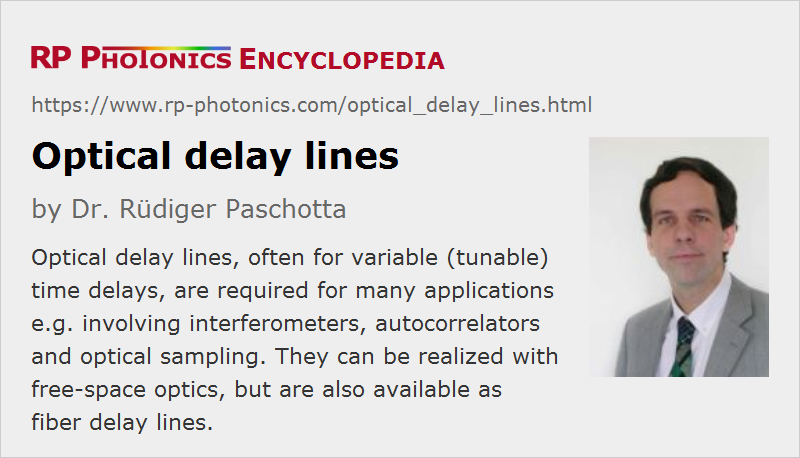

Optical Delay Lines
Acronym: ODL
Definition: an optical setup which is used to introduce a time delay for a light beam
German: optische Verzögerungsstrecken
Categories: general optics, photonic devices
How to cite the article; suggest additional literature
Author: Dr. Rüdiger Paschotta
There are many optical devices and applications where it is necessary to introduce a certain time delay for a light beam (typically, a laser beam):
- Various types of interferometers require a variable (tunable) delay line. In some cases, only an adjustment for the optical phase is required; this can be achieved with very small changes of propagation distance of the order of one optical wavelength. Other interferometers, however, require substantially larger variable time delays – for example, wavemeters, optical coherence tomography (OCT) and other devices involving white light interferometry.
- In optical fiber communications, variable delays are required for coherent receivers and in the context of time division multiplexing.
- In an optical autocorrelator, one requires a variable time delay for controlling the relative timing between two ultrashort pulses. A detector signal is then measured as a function of that relative timing. Frequency-resolved optical gating works similarly, only that a spectrograph is used for detection. Optical cross-correlators require the same kinds of variable time delays.
- Similarly, devices for electro-optic sampling require variable time delays.
- In microwave photonics, one often requires time delays of the order of a microwave oscillation period.
- In pump–probe measurements, one also requires a variable time delay for measuring some response to a pulse after a variable amount of time.
- When sum or difference frequency generation is done with ultrashort pulses, efficient conversion also requires that the pulses overlap well spatially and temporally in a nonlinear crystal. Here, however, the time delay does not have to be modified during operation, only perhaps during first alignment or in the context of maintenance.
- Optical computing requires data buffers, which are essentially realized with time delays.
In most of those cases, one requires some kind of variable optical delay line, while in a few cases a fixed delay is sufficient. Variable delays are often made as rapidly scanning delay lines, periodically scanning through some range of delays. The requirements in terms of delay range, precision, speed etc. depend very much on the application. Different kinds of delay lines are discussed in the following.
Free-space Delay Lines
Most optical delay lines work on the basis that the pulses are sent through an optical arrangement with a variable path length. Typically, path lengths in air are used, which implies a delay of ≈3.34 ps per millimeter, or ≈1 ns for 30 cm.

As an example, Figure 1 shows the setup of an intensity autocorrelator, which contains a simple optical delay line on the left side. By moving two mirrors, which are together mounted on some movable part (forming a movable retroreflector), the pulse timing can be controlled. Here, a movement by 1 mm changes the pulse timing by twice 3.34 ps, since two arm lengths are changed. For pulse durations of 1 ps, for example, one requires a delay range of the order of 1 mm, corresponding to a travel range of 0.5 mm.
In some cases, the delay is adjusted manually, for example with a micrometer screw. High-quality opto-mechanics are desirable for reaching a high precision.
In many cases, e.g. for autocorrelators and cross-correlators, the movements must be done with some kind of motorized translation stage. There are different technical options:
- For relatively small travel ranges (e.g. some tens of microns), a piezo transducer is sufficient.
- Other kinds of motors, for example piezoelectric motors in the form of slip-stick actuators or inchworm motors, or DC motors, can be used for larger travel ranges.
- In some cases, an electromagnetic shaker drive similar to that of a loudspeaker is used; the often substantial deviations from a linear movement with constant velocity may be compensated with various means, for example with software.
- Instead of a linear movement, one may use an arrangement with rotating parts, for example with a rotating glass block or a polygonal scanner. With such methods, the movement is often far from linear, but well defined and therefore well correctable e.g. with software. A disadvantage may be that the operation is interrupted regularly since not all rotational positions result in a usable beam. There are other designs based on rotating blades [7] which can provide linearly changing delays with minimum interruptions.
For highest accuracy and repeatability, some devices are a equipped with an optical interferometer, with which the control electronics can accurately monitor the position of the drive and correct it with a feedback loop.
For beam alignment purposes, some delay lines have removable irises for defining the correct beam positions.
Usually, a free-space delay line should be operated with a collimated beam having a beam radius which is large enough to obtain a Rayleigh length which is well above the path length, so that the beam radius does not undergo large changes during the passage through the device, and most importantly the beam radius and wavefront curvature of the output beam do not change substantially with changes of the delay. For example, a delay line for a 1550-nm beam with a maximum delay of 1 ns, corresponding to ≈300 mm, the beam radius should be of the order of 1 mm, which would result in a Rayleigh length of ≈2 m.
Fiber Delay Lines
In optical fiber communications, for example, delay lines with fiber-optic connectors are required.
For a fixed time delay, such a device may simply contain some length of optical single-mode fiber which is wound up to a coil and placed in a more or less compact housing. Since propagation losses in fibers can be rather low, particularly at the typical telecom wavelengths, even fiber lengths of multiple kilometers, corresponding to delay times of many microseconds, can be realized without excessive insertion loss.
Note that the relevant delay time is usually the group delay, which can be calculated as the fiber length times the group index divided by the vacuum velocity of light: T = L ng / c. The group index of a homogeneous optical medium is usually somewhat larger than the refractive index. Further, in an optical fiber it is modified by waveguide dispersion. The relevant quantity is then the group index of a fiber mode, which is typically the fundamental mode.
Variable time delays can be achieved with a fiber stretcher, where some piece of fiber can be more or less stretched in a controlled way, using a piezo transducer. This method, however, is limited to a quite small time delays, typically below 1 ps. Some are only used as phase shifters, providing a delay range of little more than one wavelength.
For longer time delays (e.g. tens or hundreds of picoseconds), one has to resort to free-space solutions, which however can be interfaced with fiber-optic connectors and enclosed in sealed boxes, making them immune to dirt and dust. Typically, such a device contains two fiber collimators around some bulk-optical free-space setup as described above. As an example, Figure 2 shows a solution with two fiber collimators and a retroreflector on a movable stage. A carefully made device design based on high-quality components is required for achieving low insertion loss with little dependence on the delay time.
There are also miniature delay lines, i.e., quite compact devices with fiber connectors on opposite ends, where one can adjust a time delay with some adjustment knob, and there can be an additional lock nut for fixing the obtained delay value. Usually, delay times are adjustable only in a range of a few picoseconds or less.
Other Operation Principles
Beyond the simple operation principles as explained above, one can realize optical delay lines in completely different ways. Some examples are given in the following.
Very long time delays for light can be realized in situations where slow light is obtained, i.e., light with a strongly reduced group velocity (usually in the vicinity of some narrow resonance). The time delay may then also be a tunable in a wide range. However, such delay lines usually work only within a very narrow optical bandwidth, except if very small structures are involved, e.g. in photonic metamaterials.
Some common-path interferometers are based on birefringence. Based on an adjustable amount of birefringence, obtained e.g. by moving a wedged birefringent crystal [4] more or less into a beam, one can realize a kind of optical delay line within a particularly stable interferometer setup.
Switching between two different time delays as possible if the polarization direction of light propagating in a birefringent medium is manipulated.
A tunable all-fiber delay line for applications in optical coherence tomography has been realized based on chirped fiber Bragg gratings which are stretched with piezo transducers [2].
One may also exploit optical resonance effects. For example, there are the devices where low-loss microring resonators are coupled to a waveguide and cause substantial modifications of the group delay [5]. For small resonators as realized on photonic integrated circuits, this can work in a substantial optical bandwidth. Tuning is possible through the device temperature, for example.
Performance Figures and Additional Features
The performance of a variable optical delay line can essentially be characterized with specifications for the following aspects:
- accessible range in terms of path length or delay time
- resolution, accuracy and repeatability of position (sometimes greatly improved with a feedback loop)
- speed, e.g. maximum scanning frequency or maximum time to reach a new position
- usable wavelength range (often limited by dielectric mirrors)
- insertion loss (and its dependence on the set delay)
Some of those quantities are relevant only for delay lines which can be arbitrarily set to different positions, rather than only continuously scanning. For fiber delay lines, other aspects may also be important, e.g. the chromatic dispersion and fiber nonlinearities causing self-phase modulation, also possibly the preservation of polarization.
Many delay lines are connected to some computer or other electronic control apparatus, usually with a digital bus system such as RS-232 or USB. They can often be entirely controlled through a computer, either manually e.g. with some Windows user interface or automatically.
For devices where one can set arbitrary delay values, the current value may be displayed on the computer screen, and new values may be either entered numerically or changed in certain steps. There are also delay lines where a position display and possibly other features are located on the housing of the delay line itself.
Dispersive Delay Lines
There are optical delay lines where one intentionally uses a large amount of chromatic dispersion in order to obtain a substantial wavelength dependence of the delay time. For example, a long optical fiber can be used as a dispersive delay line for ultrashort pulses; typical dispersion values are of the order of plus or minus some tens of picoseconds per nanometer and kilometer. For broadband pulses, e.g. with an optical bandwidth of the order of 100 nm, relative time delays of several nanoseconds within the optical spectrum are possible in a 1 km long fiber. As a result, one obtains chirped pulses with strongly increased pulse duration. That can be useful, for example, for pulse stretchers as required for chirped-pulse amplification.
A very large amount of chromatic dispersion in a short propagation length can be realized with a chirped fiber Bragg grating.
Dispersive optical delay lines can also be realized based on diffraction gratings, possibly complemented with additional optical elements such as lenses.
Besides pulse stretching, dispersive delay lines may be used in certain signal processing applications.
Optical Delay Lines for Microwave Applications
Delay lines have long been used in microwave technology. In the modern field of microwave photonics, utilizing photonics in combination with microwaves, one may utilize the superior properties of optical delay lines for effectively realizing delay lines for microwave devices. For that purpose, one can convert microwave signals to optical signals, send them through a fiber-optic delay line and finally convert them back to microwaves with a fast photodetector.
One of the possible advantages of that approach is that very much longer time delays can be realized, since optical fibers provide low propagation losses and can be strongly curved to form compact coils.
Suppliers
The RP Photonics Buyer's Guide contains 18 suppliers for optical delay lines. Among them:
Questions and Comments from Users
Here you can submit questions and comments. As far as they get accepted by the author, they will appear above this paragraph together with the author’s answer. The author will decide on acceptance based on certain criteria. Essentially, the issue must be of sufficiently broad interest.
Please do not enter personal data here; we would otherwise delete it soon. (See also our privacy declaration.) If you wish to receive personal feedback or consultancy from the author, please contact him e.g. via e-mail.
By submitting the information, you give your consent to the potential publication of your inputs on our website according to our rules. (If you later retract your consent, we will delete those inputs.) As your inputs are first reviewed by the author, they may be published with some delay.
Bibliography
| [1] | P.-L. Hsiung et al., “High-speed path-length scanning with a multiple-pass cavity delay line”, Appl. Opt. 42 (4), 640 (2003), doi:10.1364/AO.42.000640 |
| [2] | E. Choi et al., “All-fiber variable optical delay line for applications in optical coherence tomography: feasibility study for a novel delay line”, Opt. Express 13 (4), 1334 (2005), doi:10.1364/OPEX.13.001334 |
| [3] | G. Lamouche et al., “Optical delay line using rotating rhombic prisms”, Proc. SPIE 6429, 64292G (2007), doi:10.1117/12.701047 |
| [4] | A. Oriana et al., “Scanning Fourier transform spectrometer in the visible range based on birefringent wedges”, J. Opt. Soc. Am. A 33 (7), 1415 (2016), doi:10.1364/JOSAA.33.001415 |
| [5] | J. Cardenas et al., “Wide-bandwidth continuously tunable optical delay line using silicon microring resonators”, Opt. Express 18 (25), 26525 (2010), doi:10.1364/OE.18.026525 |
| [6] | S. Khan, M. A. Baghban, and S. Fathpour, “Electronically tunable silicon photonic delay lines”, Opt. Express 19 (12), 11780 (2011), doi:10.1364/OE.19.011780 |
| [7] | M. Skorobogatiy, “Linear rotary optical delay lines”, Opt. Express 22 (10), 11812 (2014), doi:10.1364/OE.22.011812 |
See also: autocorrelators, pump–probe measurements, interferometers
and other articles in the categories general optics, photonic devices
|  |
If you like this page, please share the link with your friends and colleagues, e.g. via social media:
These sharing buttons are implemented in a privacy-friendly way!